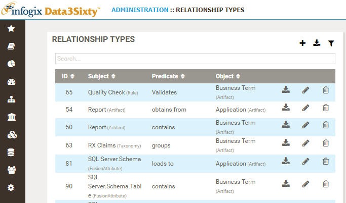

A relationship ties two artifacts together, using a predicate as a link between the two artifacts, see Establishing predicates.
For example, take the two artifact types; "Report" and "Business Term", say you have a Report which contains a particular Business Term, then "Report contains Business Term" is an example of a relationship. The term that links the two artifacts, the predicate, in this case is "contains".

Artifacts :: Reports.Contains (Data Lineage).Artifacts :: Business Term.One to Many.
Tip: When creating a relationship type, the subject should always be the higher level item in the relationship, compared to the object.